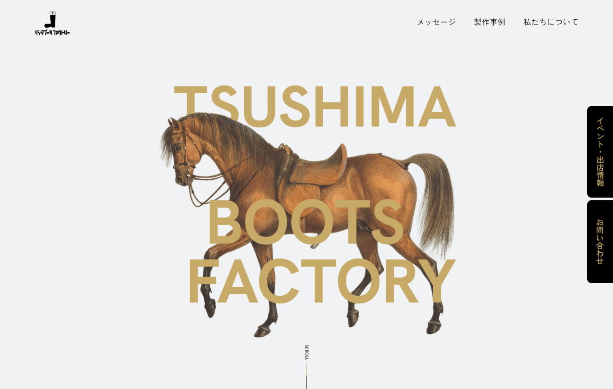
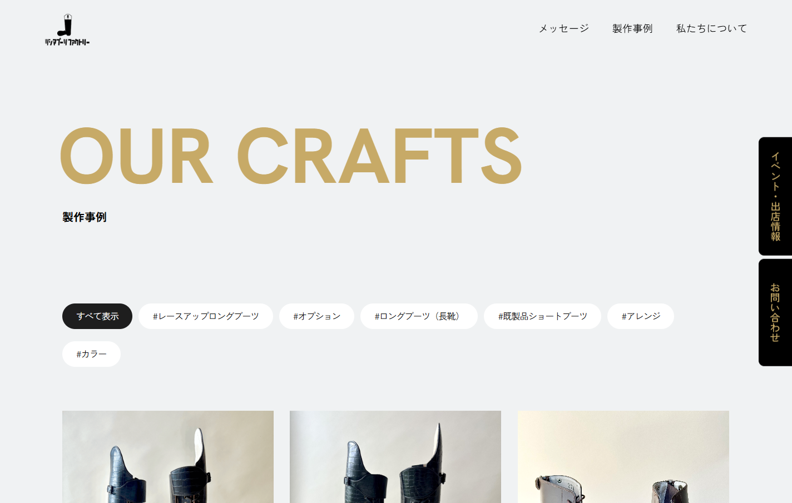
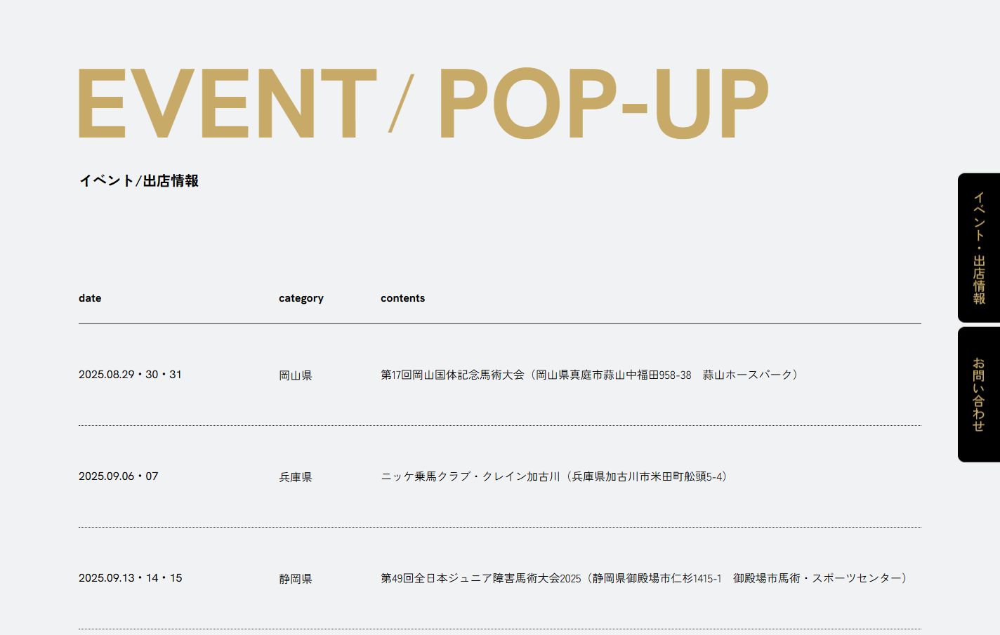

ツシマブーツファクトリー株式会社
ツシマブーツファクトリー
2024
概要
国産乗馬用ブーツで国内トップシェアを誇るツシマブーツファクトリー。乗馬・靴作り・日本人の足、いずれにも精通した職人がひとつひとつオーダーメイドで手がけるブーツづくりを伝えるコーポレートサイトの制作で、ウェブディレクションを担当しました。
取り組みウェブサイト
兵庫県加西市の本社に併設された乗馬クラブで撮影を行い、職人の手仕事と乗馬という文化が結びついた、味わい深いビジュアルでサイトを構成しました。


